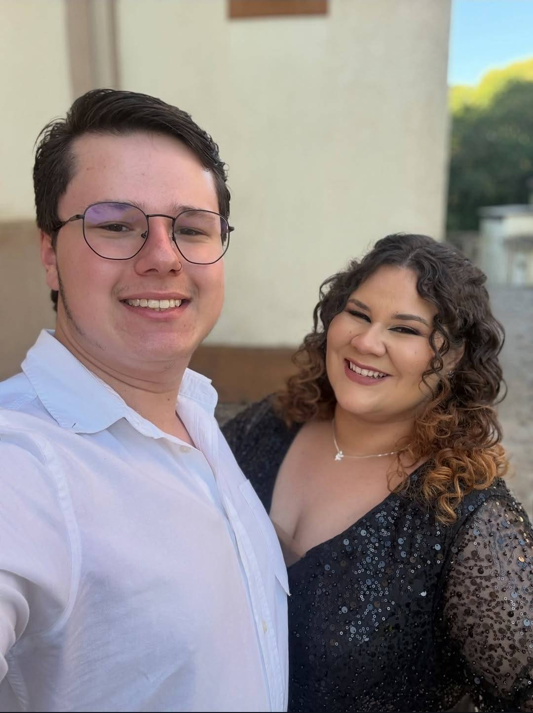
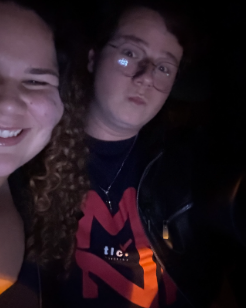

Desculpas de verdade
Não um “foi mal”. Um pedido inteiro, com responsabilidade, sem desculpas disfarçadas de justificativa.

Kamilly · Cachos · mãe do Matteo
Este lugar é seu. É do Matteo. E nosso. Um site inteiro para pedir desculpas, honrar você e deixar escrito o amor que sinto pela mãe do nosso filho.
Se você abriu este site, obrigado por me dar este instante. Não vim com uma frase curta. Vim com tempo, com palavras, com imagens, com abas e com o coração na mão. Quero que você sinta, ao passar por cada página, que nada disso foi feito às pressas: foi feito porque você merece um espaço enorme.
Existe porque eu errei. Existe porque eu te amo, Kamilly. Existe porque o Matteo merece ver o pai escolher a mãe dele com coragem. Existe porque algumas desculpas precisam de um lugar onde você possa voltar, ler de novo, e perceber que eu não recuei.
Você não é um capítulo. Você é a mulher que mudou a minha vida, que carregou o Matteo, que continua sendo o lugar mais bonito que eu conheço, mesmo quando eu fui incapaz de cuidar disso direito.

Muitas abas. Textos, cartas, um canto para o Matteo, linguagens inteiras dizendo a mesma coisa. Nenhuma pressa. A verdade é uma só: eu te amo, me arrependo, e quero ficar.
Não um “foi mal”. Um pedido inteiro, com responsabilidade, sem desculpas disfarçadas de justificativa.

Textos para você ler de manhã, de noite, ou quando a raiva e o carinho estiverem brigando no mesmo peito.

Porque o amor que sinto por você também é o amor de um pai que quer acertar ao lado da mãe do Matteo.
“Se o amor coubesse numa mensagem, eu não teria feito um site. Fiz um lugar, porque você é um lugar.”

Passeia. Abre cada aba. Fica o tempo que precisar. Se alguma frase doer, está tudo bem: a verdade às vezes dói antes de aliviar. Se alguma frase aquecer, guarda. Eu escrevi todas pensando em você, na sua força, nos seus cachos, na sua forma de amar, e na chance que ainda peço.
Hoje. Amanhã. Nas páginas seguintes. Na vida real, onde mais importa.